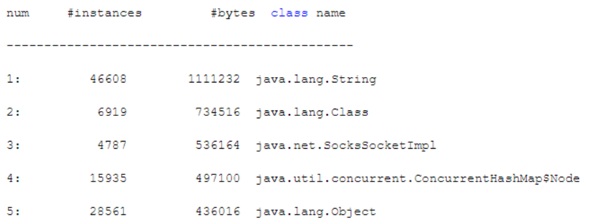

前面章节，我们已经介绍了如何通过GC日志去分析系统的运行情况。本章，我们将带领大家运行一些JVM调优/检测工具来分析运行中的系统。我们常用的调优/检测工具有三种：jstat、jmap、jhat，我们来一一看下。
jstat(JVM statistics Monitoring)：用于监视JVM运行时状态信息的命令，它可以显示出虚拟机进程中的类装载、内存、垃圾收集、JIT编译等运行数据。
jmap(JVM Memory Map)：用于生成heap dump文件，jmap可以查询当前Java堆内存的详细信息，比如当前各个区域使用率（总容量、已使用、未使用）、当前使用的是哪种收集器等。
jhat(JVM Heap Analysis Tool)：，一般与jmap搭配使用，用来分析jmap生成的dump文件，jhat内置了一个微型的HTTP/HTML服务器，生成dump的分析结果后，可以在浏览器中查看。
当然，除了上述介绍的最基本的工具外，还有很多图形化的工具，比如VisualVM、MAT等等。我们的目的是介绍使用这些工具进行调优的思路，在理解了思想之后，运用任何工具，都可以轻松把JVM的运行情况分析清楚，一通百通。
jstat可以检查JVM的整体运行情况，包括JVM内的Eden、Survivor、老年代的内存使用情况，以及Young GC和Full GC的频率及耗时。通过这些指标，我们可以分析当前系统的运行状况，判断当前系统的内存使用压力、GC频次是否太高、内存分配是否合理。
jstat的基本用法如下：
jstat [option] LVMID [interval] [count]
接下来，我们就介绍jstat的一些常用命令。
jstat -gc PID，该命令可以查看JVM的内存和GC情况，PID就是JVM的进程ID。运行命令后可以看到如下信息：
S0C：From Survivor区的总大小
S1C：To Survivor区的总大小
S0U：From Survivor区目前已使用空间
S1U：To Survivor区目前已使用空间
EC：Eden区的总大小
EU：Eden区目前已使用空间
OC：老年代的总大小
OU：老年代目前已使用空间
MC：方法区（永久代、元数据区）的总大小
MU：方法区（永久代、元数据区）目前已使用空间
YGC：系统运行迄今为止的Young GC次数
YGCT：系统运行迄今为止的Young GC总耗时
FGC：系统运行迄今为止的Full GC次数
FGCT：系统运行迄今为止的Full GC总耗时
GCT：系统运行迄今为止的所有GC总耗时
jstat -gc PID是最常用的命令，基本足够我们分析JVM的运行情况，jstat还有许多其它命令，读者可以参考Oracle官方文档： https://docs.oracle.com/javase/8/docs/technotes/tools/unix/jstat.html 。
当我们使用jstat来分析JVM的运行情况时，我们最关注以下信息：
只要知道了这些信息，就可以结合前几章的分析方法对JVM优化：合理分配内存空间，减少新生代对象频繁进入老年代，避免频繁Full GC。
根据前面几章的案例分析，我们首先需要对系统的内存使用模型进行估算，也就是分析每秒钟会在Eden分配多少对象。
可以通过jstat -gc PID 1000 10进行分析，即每隔1s更新一行jstat统计信息，一共执行10次。
举个例子：假如执行这个命令后，第1s先显示出来Eden区使用了200MB内存，第2s显示出来的那行统计信息里，发现Eden区使用了205MB，第3s显示出来的那行，发现Eden区使用了209MB内存。以此类推，可以推断出，系统大概每秒新增5MB左右的对象。
另外，一般系统有高峰和日常两种状态，高峰时期执行上述命令可以看到高峰期的对象增长速率。非高峰期可能系统负载比较低，不一定每秒都有请求，所以可以把上面的1秒钟调整成1分钟，甚至10分钟。
按照上述思路，基本可以对线上系统的高峰和日常两个时段内的对象增长速率有很清晰的了解。
通过新生代对象的增长速率，可以很容易推测出Young GC的触发频率。比如Eden区总共有800MB内存，高峰期每秒新增5MB对象，那么高峰期大概3分钟就会触发一次Young GC。日常期以次类推。
jstat -gc会告诉我们从JVM启动至今一共发生了多少次Young GC以及总耗时。比如系统运行了24小时后共发生了260次Young GC，总耗时20s。那么平均下来，每次Young GC大概就耗时几十毫秒的时间。
每次Young GC过后，有多少对象会存活下来，这个没法直接看出来，但是可以根据Young GC的触发频率推断出来。
比如，我们可以每隔3分钟统计一次（jstsat -g PID 180000 ），此时可以观察，Eden、Survivor、老年代的已使用空间的变化情况。正常来说，Eden区在经历Young GC后会从接近占满到变得很少，Survivor区会放入一些存活对象，老年代可能会增长一些对象占用。
所以，每次Young GC过后的存活对象大小，就是Survivor区的对象大小和本次老年代增长的大小；晋升对象的大小就是本次老年代增长的大小。
只要知道了老年代的增长速率，那么Full GC的触发时机就可以推断出来。比如，老年代总共800MB内存，每隔3分钟新增50MB，那么大概1小时触发一次Full GC，这就是Full的触发频率。
至于Full GC的平均耗时，可以通过jstat命令打印出来的JVM启动以来的Full GC次数和总耗时计算出来。比如迄今一共执行了10次Full GC，总耗时30s，那么Full GC平均耗时就是3s左右。
如果只是需要了解JVM的运行情况，然后进行JVM GC优化，那jstat完全够用了。但是有时候，我们会发现JVM新增对象的速度很快，然后就想看看，到底什么对象占据了那么多的内存。比如，我们之前的模拟对象晋升一章中，总有几百KB的未知对象占据着空间，jmap就可以帮助我们解决这个问题。
jmap（JVM Memory Map），用于生成heap dump文件，可以查询当前Java堆的详细信息，比如当前各个区域使用率（总容量、已使用、未使用）、当前使用的是哪种收集器等。其基本用法如下：
jmap [option] LVMID
[options]命令参数：
该命令用于显示Java堆内存的详细信息，比如Eden区总容量、已使用的容量、剩余容量，两个Survivor区的总容量、已使用容量、剩余容量，老年代的总容量、已使用容量、剩余容量。
但是，这些信息一般jstat命令就可以显示，所以一般不会用jmap去看这些信息。
jmap -histo会打印出类似以下的信息，即当前JVM中的对象占用情况（按空间占用从大到小排序）：

所以，通过该命令可以了解到当前内存里到底是哪个对象占用了大量空间
jmap -dump可以生成一个Java堆转储快照。比如jmap -dump:live,format=b,file=dump.hprof PID，这个命令会在当前目录下生成一个dump.hprof二进制文件，它会把这一时刻Java堆内存中的所有对象的快照放到文件中去，供后续分析。
jhat（JVM Heap Analysis Tool），一般与jmap搭配使用，用来分析jmap生成的Java堆转储快照文件。
jhat内置了一个微型的HTTP/HTML服务器，生成dump的分析结果后，可以在浏览器中查看。
一般不会直接在服务器上进行分析，因为jhat是一个耗时并且耗费硬件资源的过程，一般把服务器生成的dump文件复制到本地或其他机器上进行分析。另外，分析同样一个dump快照，MAT需要的额外内存比jhat要小的多的多，所以建议使用MAT来进行分析，当然也看个人偏好。
jstat的基本用法如下：
jhat [dumpfile]
比如，可以使用命令jhat dump.hprof -port 7000启动jhat服务器，当通过浏览器访问7000端口时，就可以通过图形化的方式去分析堆内存里的对象分布情况了。
本章，我们介绍了jstat、jmap、jhat这三种命令行工具的基本用法。系统开发完毕后，一般要经过预估性优化、压测优化、线上监控这三个过程。
预估性优化 ：本质就是估算系统内存使用模型，然后合理分配Java堆内存，尽量让每次Young GC后的存活对象小于Survivor区，避免存活对象频繁进入老年代引发Full GC。
压测优化 ：是对预估性优化的检验，通常这个环境会使用一些压测工具模拟高并发的访问，看看系统能否撑住请求压力、响应延时是否在正常范围内，保持稳定运行。压测环节需要借助jstat等工具分析JVM运行情况，然后合理调整堆内存分布。
线上监控 ：是系统上线之后对JVM的监控，最简单的方式是在每天的高峰期和日常期，用jstat、jmap、jhat等命令查看JVM情况。更常见的做法是引入专门的监控系统，比如Zabbix、OpenFalcon、Ganglia等。业务系统会将JVM统计项发给这些监控系统，然后监控系统会进行分析并以图形化方式动态展现，还可以制定监控规则，让其对频繁GC的情况进行告警。
下一章，我们将通过实际案例讲解如何通过jstat、jmap、jhat这三种命令行工具进行优化。